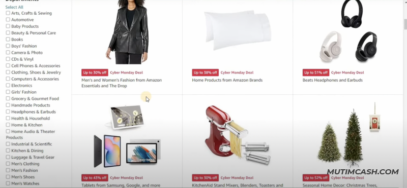

CLEAN CASH

ЗАРОБОТОК НА СВЯЗКЕ Pinterest+Amazon
Давайте рассмотрим подробнее, как можно создать свой собственный бизнес, используя эту комбинацию инструментов.
- Сам сайт - Amazon Associates
Для начала вам необходимо зарегистрироваться в партнёрской программе Amazon, которая позволяет вам зарабатывать комиссионные с продаж
Или же мы можем перейти на сайт, который называется Audibel. Здесь у нас есть возможность также зарегистрироваться в партнерскую программу Amazon. Я буду делать это с использованием данного метода.
Сам сайт - Audibel
Далее нажимаю создать новый Амазон аккаунт
После чего вводим свои данные и нажимаем Create your Amazon account
Затем нам приходит на почту письмо с кодом. Мы его вставляем и нажимаем Create your Amazon account
Далее нужно будет пройти простой опрос. Я рекомендую добавлять свои данные, то есть данные получателя платежа. Вы должны добавить свои реальные данные. Заполняем и нажимаем Next
После этого мы должны ввести свой источник трафика в первом разделе, а именно "Enter Your Website(s)". Туда мы можем добавить ссылку на наш сайт или ссылку на нашу социальную сеть. В нашем случае, ссылку на аккаунт Pinterest. Во втором разделе, а именно "Enter Your Mobile App or Alexa Skill", мы будем добавлять ссылку на наш аккаунт Pinterest.

Далее переходим в Pinterest и по данному ключевому запросу ищем аккаунты, связанные с "home gadgets". И аккаунт, который вам больше всего понравятся, вы можете добавить в партнерскую ссылку Amazon. Я нашел такой простой Pinterest аккаунт, у которого нет никакой ссылки, никакой привязки. И это нам подходит
Копируем ссылку, переходим в партнерскую программу и добавляем её. Можно добавить несколько источников. Далее нажимаем Next
Далее переходим в Pinterest и по данному ключевому запросу ищем аккаунты, связанные с "home gadgets". И аккаунт, который вам больше всего понравятся, вы можете добавить в партнерскую ссылку Amazon. Я нашел такой простой Pinterest аккаунт, у которого нет никакой ссылки, никакой привязки. И это нам подходит
.png)
Копируем ссылку, переходим в партнерскую программу и добавляем её. Можно добавить несколько источников. Далее нажимаем Next
.png)
Далее нам нужно придумать индификатор нашего магазина, то есть это реферальный код, который будет автоматически привязываться к ссылкам, которые мы будем получать с магазина Amazon. Если ссылка будет занята, то в этом случае мы можем заменить её на другую. Далее мы описываем свой источник трафика. Например, я написал, что я буду продвигать товары Amazon на своем Pinterest аккаунте.
У меня получилось так . Нажимаем продолжить и получаем уведомление о успешно созданном партнерского аккаунта в Amazon, где мы получаем уникальный идентификатор Shoppingmi09-20.
Мы здесь можем ввести наши платёжные данные. Этот шаг я пропускаю. Платёжные данные я обычно ввожу тогда, когда я зарабатываю деньги, то есть после того, как я заработаю деньги, я ввожу платёжные данные, на которые уже будет Amazon перечислять деньги. Здесь просто нажимаем на позже После этого открывается интерфейс рабочего партнёрского кабинета на Amazon, и с этим кабинетом мы с вами будем работать далее через некоторое время.
Далее, через некоторое время, нам на почту приходит такое сообщение о том, что наш аккаунт успешно создан в партнёрской программе Amazon, и мы можем приступать к нашей работе.
Также, я уже подготовил Pinterest аккаунт, который буду развивать под партнёрство с Amazon. Назвал Pinterest аккаунт "Cool Gadgets". Здесь я буду продвигать различные гаджеты, подарки и так далее. То есть, по максимуму буду пользоваться данным Pinterest аккаунтом и буду стараться его продвигать.
Шаг 2: Ищем идеи для продвижения в Pinterest
Для того чтобы найти идеи, что продвигать в Pinterest, мы можем воспользоваться инструментом аналитики. Для этого переходим в раздел аналитики и выбираем Trends.
Здесь мы можем найти популярные ниши в текущий момент и на их основе подобрать товары на Amazon для продвижения в Pinterest. Мы можем изучить самые популярные запросы за последние 30 дней, что позволяет нам определить актуальные темы и ниши. Мы также можем спуститься и просмотреть тренды здесь и узнать, что именно пользователи наиболее активно ищут в данный момент. То есть, мы можем увидеть, что в настоящее время самые популярные тренды - это идеи новогодних ёлок. Таким образом, можно приложить усилия к продвижению товаров в этой нише и заработать на этом.
Если мы решим искать ёлочные игрушки и публиковать их в Pinterest, то, исходя из этого ключевого запроса, мы можем создать соответствующую доску в Pinterest и наполнить её тематическим контентом, связанным с ёлочными украшениями. Однако, как вы отмечаете, наш интерес также сосредоточен на товарах, которые обеспечивают наибольшие отчисления после продажи. В таком случае мы можем обратить внимание на категории товаров, такие как электроника, ювелирные изделия и другие товары, стоимость которых составляет от 100 до 150 долларов и более. Итак, здесь, если вы не находите тот или иной ключевой запрос, который вам понравился, вы можете перейти в keywords. Здесь вы можете ввести, к примеру, мы добавляем "gadget", нажимаем Enter
И видим, какие ключевые запросы на данный момент популярны. Вот, к примеру, "Kitchen gadgets" Это такая вот стабильная тема, которая имеет свой трафик и свою популярность.
Тренд у данной тематики всегда есть, он стабильный. Здесь также мы можем видеть дополнительные ключевые запросы, которые можем использовать. На основе этой ниши мы можем подобрать большое количество товаров на Amazon.
К примеру, вот люди продвигают 16 гаджетов в Amazon, которые нужно купить. То есть можно также создать блог и наполнять его контентом, а затем продвигать этот блог в Pinterest.
Пишу в поиске "Christmas Lights", и это то, что будут в основном покупать в Новый год. То есть гирлянды, новогодние игрушки, даже новогодние гаджеты. Там различные кофемашины. Продвигать тут нет ограничений по продвижению. Вы можете выбрать свою тематику и уже данную тематику продвигать.
Давайте мы с вами перейдём в Amazon, именно Amazon нужно открыть там, где мы авторизуемся в партнёрскую программу, потому что мы сможем автоматически генерировать ссылки. Здесь мы переходим в Amazon. Как мы видим, здесь у нас появляется панель управления нашей партнёрской программой. То есть это здесь мы можем генерировать наши партнёрские ссылки.
Допустим, у нас здесь есть категория "праздники". Мы можем открыть "праздники" и посмотреть, что здесь больше всего заказывается. Я хочу создать такую доску и наполнять её товарами, то есть идеями для подарков в Новый Год. Думаю, самая популярная на данный момент ниша.
И видим такие товары
Шаг 3: Создаем доску в Pinterest
Для того чтобы создать доску в Pinterest, нужно нажать на "+"
Я здесь создаю доску в Pinterest и называю её данным ключевым запросом. Также я здесь должен сохранить несколько пинов, пинов, которые будут характеризовать именно нишу, которую я буду здесь продвигать. Вот, пусть будет это данный пин, сохранён у меня. Также этот пин, данный пин. Самое главное, чтобы они были по вашей тематике, и я нажимаю "Да". Всё, несколько пинов достаточно.
Я выбрал этот пин и ещё три. Теперь перейдем в Amazon и найдем интересные товары, которые мы можем продвигать в данной нише. Допустим, я нашел в Amazon такой продукт, который стоит 33 доллара. Здесь мы можем также взять картинки и создать под этот пин. Какой же инструмент мы будем использовать для того, чтобы автоматически получить всю информацию, то есть не придумывать вручную название пина, описание пина, теги и так далее? Нам будет автоматически генерировать всю эту информацию искусственный интеллект.И это всё работает с Amazon и другими интернет-магазинами. То есть несколько интернет-магазинов включают работу с данным искусственным интеллектом.
Шаг 4: Работа с ИИ
Сейчас будьте внимательны, я вам всё пошагово продемонстрирую. Данным искусственным интеллектом является сервис Penny AI, который предоставляет нам
Для того чтобы активировать, вам нужно будет нажать на "Добавить в Chrome". Далее вы просто устанавливаете данное расширение. Оно у меня уже установлено и после этого вас перебрасывает на страницу регистрации. У вас сразу же на вашей странице Amazon появляется вот такой чат, и этот чат мы будем использовать. Также здесь есть вот "Similar Better". То есть вы можете искать похожие товары. Это вам поможет найти ещё больше интересных товаров по нише, которую вы продвигаете. Это даст вам возможность создавать больше пинов.
Давайте мы будем на основе данного товара получать информацию. Мы нажимаем на чатик, и данный чат сразу же анализирует этот товар и данную страницу товара. Он нам даёт возможность поработать, но я буду использовать это в своих корыстных целях. Давайте я вам продемонстрирую как я работаю с данным инструментом. То есть я пишу такой запрос: 'Пожалуйста, сгенерируйте название, описание и теги для данного продукта.' Просто я нажимаю Enter, и данный искусственный интеллект сразу же на основе данного продукта он мне выдаёт название. Он мне выдаёт описание, и также он мне выдаёт теги. Всё то, что он выдаёт, будет соответствовать данному продукту, и мне остаётся взять отсюда любое изображение, которое мне больше всего нравится, и уже на основе этого изображения создать пин. Чтобы скачать данное изображение, я использую простое расширение в Google Chrome, которое называется "Nava IM Downloader". Это расширение позволяет мне скачивать изображения с веб-страниц. Однако, здесь нужно будет в списке всех изображений, которые находятся на данной странице, найти именно то изображение, которое вы желаете скачать, то есть то, которое относится к товару. Как видите, здесь появляются наши изображения. Я скачаю это конкретное изображение и все. Я теперь перехожу в Canva, где я буду создавать пин. Для этого мне нужно будет ввести "pinterest" в строку поиска, чтобы найти шаблоны для Pinterest. Используя данный шаблон, я могу создавать пины, которые буду, соответственно, публиковать на своей доске. Такие пины можно создавать достаточное количество в день. Если это приносит вам удовольствие, мне например, такое творчество приносит удовольствие, и соответственно, это приносит очень хорошие деньги.
Затем, мы это всё дело сохраняем. После сохранения мы переходим в Pinterest, нажимаем на данный плюсик и создаём уже здесь пин.
Далее, после того как мы загрузили картинку, нам нужно будет добавить заголовок. Заголовок у нас имеется, мы просто копируем полностью то, что у нас здесь есть, и добавляем сюда. Затем, мы добавляем описание. Описание тоже нам сгенерировал искусственный интеллект, мы можем смело копировать всё, что нам здесь прописал, вместе с тегами. Тоже добавляем сюда. После, нам нужно добавить, партнёрскую ссылку. Сразу скажу, ссылки от Amazon Pinterest очень сильно любит, потому что эти ссылки все трастовые.
У меня получилось так( в мобильной версии все выглядит шикарно)
Личная рекомендация
Я рекомендую делать больше тематических досок и каждую доску наполнять десятью-пятнадцатью пинами, не больше. Больше не нужно делать, Pinterest - это такая социальная сеть, которая даёт трафик даже двум или трем пинам.